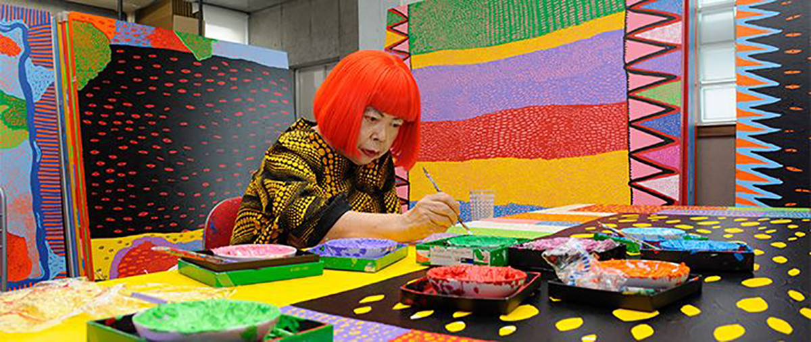
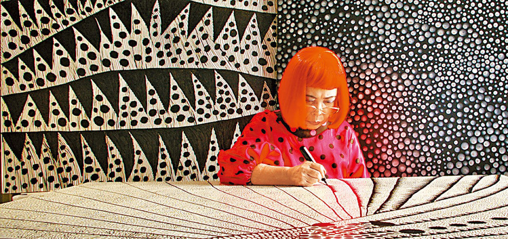

This is who I am! 走過荊棘路，草間彌生建立起自己的世界觀!
一個簡單的原點，能代表什麼?
草間彌生，這個名字想必許多人都不陌生，甚至可以在許多報章雜誌、書籍中找到她的身影及創作。提到她，你可能會聯想到一頭艷麗的紅髮及無窮無盡原點，這些彷彿已成為了她的代表，但這背後似乎有著令人動容的故事。
草間彌生從小就註定會有一個不平凡的人生，僅僅十歲的她罹患了神經性視聽障礙，會有幻聽幻視的症狀，對她而言，世界彷彿被無限的斑點所覆蓋、植物在與她說話，生活如同一張巨大的往將她綑綁住，這些幻覺使她痛苦不堪，再加上母親的忽視及冷淡，使她度過了無數個充滿孤獨及恐懼的夜晚，因此她曾經走上自殺的道路，最終她在繪畫的過程中得到了治療。
然而繪畫體現人心，一張張缺少笑容的圖畫，彷彿是草間彌生的吶喊，恐懼與焦慮如怪物般將她吞噬，得不到家人的支持，她的母親甚至把她的畫作與顏料帶走，草間彌生感到十分的絕望 ，為了逃離家庭的束縛，在她26歲之時，寫信給了美國當代十分有名的女藝術家---喬治亞‧歐姬芙，並意外的得到她的支持，2年後她動身前往紐約展開她的藝術生活，然而在當時，藝術圈多由男性來主導，因此她的畫作往往不被受到重視甚至被人瞟竊，為了節約開銷，她住在簡陋的公寓，時常挨餓著構思一幅幅的畫作，也曾在紐約接受過精神疾病的治療，經過日夜的努力，她充滿想像力及生命力的畫作逐漸脫穎而出，逐漸在藝術圈嶄露頭角。
草間彌生的創作引起全世界的關注，她回到日本之後仍舊不斷的創作，在2016 年甚至被《TIME》時代雜誌選為百大對世界具影響力的人物之一，她的創作在早年多使用單色調，隨著繪畫的成熟，她開始使用強烈的用色及大膽的表現，然而她的畫作仍大多以重複出現的原點為主，而在台北市市民大道上的公共藝術---南瓜是草間彌生另一代表作，她曾說過：「當我抱起南瓜時，總會想起遙遠孩提時代的記憶。我的心有好幾次，因南瓜而獲得救贖，在過往內心困苦的日子裡，南瓜總能撫慰我的心靈。」，從此可以看出南瓜對她的影響力，也是她精神獲得平靜的來源，期許透過這個作品來給予人們希望與愛。
草間彌生一生從不害怕自己所擁有的黑暗面，儘管人生路上跌跌撞撞，充滿荊棘與泥濘，她仍舊劈荆斩棘，用一個個圓點，開闢出屬於自己的康莊大道。
photo source: google